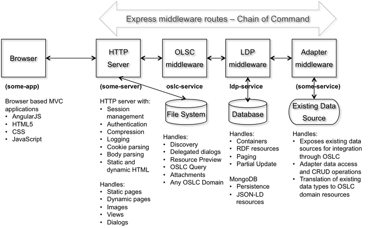

Eclipse/Lyo provides a set of Java based APIs and generative tools to support the creation of OSLC domain servers and integrated client applications. While Eclipse/Lyo provides a very rich and robust platfrom for OSLC development, it has a relatively high learning curve and that can increase development time, costs and risks.
OSLC4JS represents a set of related Open Source projects supporting the creation and integration of OSLC based client and server applications that leverage the dynamic and asynchronous capabilities of JavaScript and Node.js. The LDP Service and OSLC Service projects provide Express.js middleware components that can be used to add LDP and/or OSLC services to any Express Web application. The OSLC Browser and OSLC Server projects use these services to create sample OSLC client and server apps that can easily and dynamically adapted to any OSLC domain, extensions to domains, and/or integrations between domains.
OSLC4JS's goal is to minimize the cost of developing the OSLC specifications, reference implementation and test suites. The OASIS OSLC specifications would also benefit from a reference implementation in dynamic language such as JavaScript.
The OSLC4JS Projects
The following sections provide a brief description of each OSLC4JS sub-project and provide links to the development sites and related work products. The figure below shows the relationship between the modules created in the projects, and how they are assembled into a Web application.

Adapter middleware in the figure represents some Express.js middleware component that provides CRUD access to some existing data source. This provides a simple way for vendors to provide OSLC access to their data sources without having to implement the details of OSLC and/or LDP.
A oslc4js Slack Channel has been created to facilitate collaborative development of these Open Source Projects. Documentation and collaboration will be capture in the GitHub Wikis for each of the repositories. GitHub issues will be used to manage the development work.
| Project | Description | More information |
|---|---|---|
| OSLC Browser | A sample OSLC Web application that uses the OSLC Service to provide a means of browsing OSLC resources. OSLC Browser allows you to configure a connection pool of contributing OSLC servers, and provides a convenient means of browsing the content contributed by those servers. The federation of thigs information is supported by the OSLC service with can also support OSLC domains, extension to domains, integration between domains. This allows the OSLC Browser to act as a federation hub for OSLC resources where stakeholder viewpoints, views (i.e., active dashboards) can be created to support integration needs. | Mural Design Wiki Bluemix App app route |
| OSLC Client API | A simple Node.js asynchronous OSLC client API to facilitate rich application development in JavaScript. This API may be attractive to client developers who wish to access OSLC capabilities and resources through a more logical API abstraction rather than more raw REST services. | Wiki npm package |
| OSLC Service | A generic Node.js Express middleware OSLC 3.0 service that can support any domain and can be easily adapted to any applicable data source. This services also utilizes the LDP Service. | Wiki npm package |
| OSLC Server | A minimal OSLC server that uses the oslc-service and ldp-service and can be accessed using a browser REST client. An instance of this server is deployed to IBM Bluemix in order to provide a platform for OSLC experimentation and testing. | Wiki |
| LDP App | A sample Linked Data Platform (LDP) Web application that uses the LDP Service and supports CRUD operations and a graph of linked data. | Wiki |
| LDP Service | Express middleware providing LDP capabilities to Web apps, with storage of JSON-DL in MongoDB. | Wiki npm package |